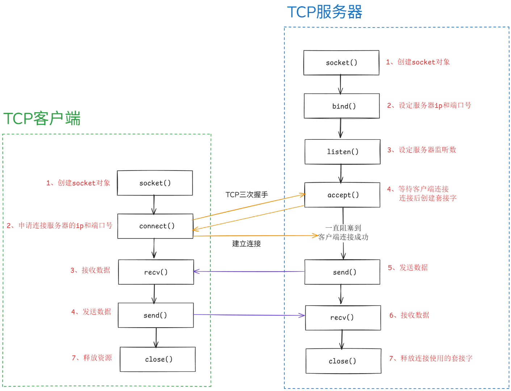

11_Python网络编程
1 网络协议
阮一峰 互联网协议入门（一） 自下而上讲解互联网如何构成 阮一峰 互联网协议入门（二） 自上而下讲解互联网如何应用
2 编解码
从网络或磁盘上读取字节流，读到的数据是bytes。要把bytes变为str，就需要用decode()方法，如果想要将str转为bytes，就需要使用encode()方法。
- s.encode(码表)编码，默认码表为 UTF-8 -
s.decode(码表)解码，默认码表为 UTF-8
1 | |
有一种特殊的编码方式，对于ASCII码表中的字符，可以使用b''包围字符串进行编码，但是注意不能对中文进行编码。
1
2# <class 'bytes'>
print(type(b'hello python'))
3 网络编程-收发一句话

只要确定主机和端口，我们就能实现程序之间的交流。
因此，Unix系统就把主机+端口，叫做”套接字”（socket）。有了它，就可以进行网络应用程序开发了。
TCP服务器端： 1
2
3
4
5
6
7
8
9
10
11
12
13
14
15
16
17
18
19
20
21
22
23
24
25import socket
# 1、创建socket对象
# family：地址族，默认AF_INET（IPV4） AF_INET6(IPV6)
# type：socket类型，默认SOCK_STREAM（TCP） SOCK_DGRAM(UDP)
serve_socket = socket.socket(socket.AF_INET, socket.SOCK_STREAM)
# 2、设定服务器端的ip和端口号，注意参数必须为元组
serve_socket.bind(('127.0.0.1', 2025))
# 3、设置监听数限制，也就是排队的客户端数量限制
serve_socket.listen(5)
# 4、等待连接，返回代表该连接的套接字信息和连接者的地址信息，阻塞到客户连接
sock, client = serve_socket.accept()
# 5、编码并发送数据
sock.send('你好我是服务器，欢迎来到socket'.encode())
# 6、接收数据并解码，设定每次接收数据限制为1024
data = sock.recv(1024).decode()
print(f'服务器端收到来自：{client}的消息：{data}')
# 7、释放资源，关闭当前连接，一般服务器不需要关闭
sock.close()
TCP客户端： 1
2
3
4
5
6
7
8
9
10
11
12
13
14
15
16
17import socket
# 1、创建socket对象
client_socket = socket.socket(socket.AF_INET, socket.SOCK_STREAM)
# 2、请求连接服务器的ip和端口号
client_socket.connect(('127.0.0.1', 2025))
# 3、接收数据并解码，设定每次接收数据限制为1024
data = client_socket.recv(1024).decode()
print(f'客户端收到：{data}')
# 4、编码并发送数据
client_socket.send('我是客户端'.encode())
# 5、释放资源
client_socket.close()
4 网络编程-收发文件
TCP服务器端： 1
2
3
4
5
6
7
8
9
10
11
12
13
14
15
16
17
18
19
20
21
22
23
24import socket
# 1、创建socket对象
serve_socket = socket.socket(socket.AF_INET, socket.SOCK_STREAM)
# 2、设定服务器端的ip和端口号
serve_socket.bind(('127.0.0.1', 2200))
# 3、设置监听数限制，也就是排队的客户端数量限制
serve_socket.listen(5)
# 4、等待连接，返回代表该连接的套接字信息和连接者的地址信息
sock, client = serve_socket.accept()
# 5、使用二进制写，接收数据
with open('rev_msg.jpg', 'wb') as f:
while True:
data = sock.recv(8192) # 文件稍大一些
if not data: # 没数据就停止
break
f.write(data) # 将接收数据写入本地文件
# 6、释放资源
sock.close()
TCP客户端： 1
2
3
4
5
6
7
8
9
10
11
12
13
14
15
16
17
18import socket
# 1、创建socket对象
client_socket = socket.socket(socket.AF_INET, socket.SOCK_STREAM)
# 2、请求连接服务器ip和端口号
client_socket.connect(('127.0.0.1', 2200))
# 3、使用二进制读，发送数据
with open('send_msg.jpg', 'rb') as f:
while True:
data = f.read(8192) # 文件稍大一些
if not data: # 没数据就停止
break
client_socket.send(data) # 将本地文件发送出去
# 4、释放资源
client_socket.close()